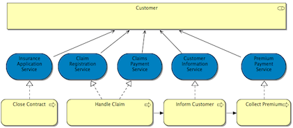

先显示元素（使用Ctrl/Command键交换）
当从魔术连接器单击到空视图画布上时，首先显示元素，然后在弹出菜单中显示连接。同时按住Ctrl/Command键将反转。
首先显示连接（使用Ctrl/Command键交换）
当从魔术连接器单击到空视图画布上时，首先显示连接，然后在弹出菜单中显示元素。同时按住Ctrl/Command键将反转。
对连接使用抗锯齿
在Windows和Linux操作系统上可确保更顺畅地绘制连接。
使用正交连接锚点
如果勾选此项，则使用一种新方法来计算连接的锚点（连接连接到图形的位置）。默认情况下（未勾选选项），锚点计算为图形边界和以图形中心为目标的连接的交点。使用此选项，计算锚点以使连接成为垂直线或水平线（如果不可能，则连接到图形的角之一）。可以通过移动图形或在连接中创建弯曲点并移动它来移动此锚点。
例如，如果未勾选（默认），则连接显示如下：
如果勾选，则连接显示如下：

使用直线曲线
如果启用此选项，连接将在弯曲点处显示为曲线。
对相交关系使用换行
如果启用此功能，当一个连接与另一个连接交叉时会显示一条跳跃曲线。
标签背景
设置绘制连接标签背景的策略。这可以是“透明”、“不透明”或“剪裁”之一。
当重新连接影响其他视图时显示警告消息
当在一个视图中重新连接ArchiMate元素时，这些元素和连接可能存在于一个或多个其他视图中。重新连接将影响这些视图，并且此警告会提醒用户注意这一点，并且可以撤消操作。
有关详细信息，请参阅容器元素和嵌套元素关系。
在视图中为嵌套元素启用隐式连接
如果启用此功能，则认为嵌套的父/子元素在视图中具有隐式连接，表示模型中元素之间的关系。
在从调色板创建新元素时提供创建新关系
如果启用此功能，则当从调色板将新元素添加到视图中的父元素时，会出现一个对话框，提供在父元素和子元素之间创建新关系。
提供从模型树添加元素时创建新关系
如果启用此功能，则当从模型树将新元素添加到视图中的父元素时，会出现一个对话框，提供在父元素和子元素之间创建新关系（如果尚不存在）。
提供在将元素移动到新父元素时创建新关系
如果启用此功能，则当视图中的元素被拖到视图中的父元素上时，会出现一个对话框，提供在父元素和子元素之间创建新关系（如果尚不存在）。
创建新关系时提供的关系类型
选择在视图中的父元素和子元素之间创建新的隐式连接时将提供的关系类型。
创建新关系时提供的反向关系类型
选择在视图中的子元素和父元素之间创建新的隐式连接时将提供的关系类型。这些是“反向”嵌套。
嵌套元素时隐藏的关系类型
当存在嵌套的父子元素时，选择将隐藏在视图中的关系连接类型。